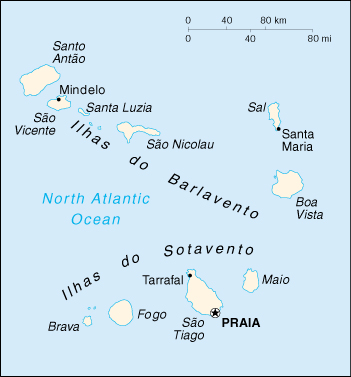

|
Cape Verde | |
| Introduction Geography People Government Economy Communications Transportation Military Transnational Issues | ||
|  | ||
| Cape Verde | Introduction | Top of Page |
| Background: | The uninhabited islands were discovered and colonized by the Portuguese in the 15th century; they subsequently became a trading center for African slaves. Most Cape Verdeans descend from both groups. Independence was achieved in 1975. |
| Cape Verde | Geography | Top of Page |
| Location: | Western Africa, group of islands in the North Atlantic Ocean, west of Senegal |
| Geographic coordinates: | 16 00 N, 24 00 W |
| Map references: | World |
| Area: |
total:
4,033 sq km
land: 4,033 sq km water: 0 sq km |
| Area - comparative: | slightly larger than Rhode Island |
| Land boundaries: | 0 km |
| Coastline: | 965 km |
| Maritime claims: |
measured from claimed archipelagic baselines
contiguous zone: 24 NM exclusive economic zone: 200 NM territorial sea: 12 NM |
| Climate: | temperate; warm, dry summer; precipitation meager and very erratic |
| Terrain: | steep, rugged, rocky, volcanic |
| Elevation extremes: |
lowest point:
Atlantic Ocean 0 m
highest point: Mt. Fogo 2,829 m (a volcano on Fogo Island) |
| Natural resources: | salt, basalt rock, pozzuolana (a siliceous volcanic ash used to produce hydraulic cement), limestone, kaolin, fish |
| Land use: |
arable land:
11%
permanent crops: 0% permanent pastures: 6% forests and woodland: 0% other: 83% (1993 est.) |
| Irrigated land: | 1,500 to 2,000 hectares (1999) |
| Natural hazards: | prolonged droughts; harmattan wind can obscure visibility; volcanically and seismically active |
| Environment - current issues: | overgrazing of livestock and improper land use such as the cultivation of crops on steep slopes has led to soil erosion; demand for wood used as fuel has resulted in deforestation; desertification; environmental damage has threatened several species of birds and reptiles; overfishing |
| Environment - international agreements: |
party to:
Biodiversity, Climate Change, Desertification, Environmental Modification, Hazardous Wastes, Law of the Sea, Marine Dumping
signed, but not ratified: none of the selected agreements |
| Geography - note: | strategic location 500 km from west coast of Africa near major north-south sea routes; important communications station; important sea and air refueling site |
| Cape Verde | People | Top of Page |
| Population: | 405,163 (July 2001 est.) |
| Age structure: |
0-14 years:
42.79% (male 87,458; female 85,895)
15-64 years: 50.76% (male 97,812; female 107,834) 65 years and over: 6.45% (male 10,204; female 15,960) (2001 est.) |
| Population growth rate: | 0.92% (2001 est.) |
| Birth rate: | 28.71 births/1,000 population (2001 est.) |
| Death rate: | 7.19 deaths/1,000 population (2001 est.) |
| Net migration rate: | -12.37 migrant(s)/1,000 population (2001 est.) |
| Sex ratio: |
at birth:
1.03 male(s)/female
under 15 years: 1.02 male(s)/female 15-64 years: 0.91 male(s)/female 65 years and over: 0.64 male(s)/female total population: 0.93 male(s)/female (2001 est.) |
| Infant mortality rate: | 53.22 deaths/1,000 live births (2001 est.) |
| Life expectancy at birth: |
total population:
69.21 years
male: 65.93 years female: 72.6 years (2001 est.) |
| Total fertility rate: | 4.05 children born/woman (2001 est.) |
| HIV/AIDS - adult prevalence rate: | NA% |
| HIV/AIDS - people living with HIV/AIDS: | NA |
| HIV/AIDS - deaths: | NA |
| Nationality: |
noun:
Cape Verdean(s)
adjective: Cape Verdean |
| Ethnic groups: | Creole (mulatto) 71%, African 28%, European 1% |
| Religions: | Roman Catholic (infused with indigenous beliefs); Protestant (mostly Church of the Nazarene) |
| Languages: | Portuguese, Crioulo (a blend of Portuguese and West African words) |
| Literacy: |
definition:
age 15 and over can read and write
total population: 71.6% male: 81.4% female: 63.8% (1995 est.) |
| Cape Verde | Government | Top of Page |
| Country name: |
conventional long form:
Republic of Cape Verde
conventional short form: Cape Verde local long form: Republica de Cabo Verde local short form: Cabo Verde |
| Government type: | republic |
| Capital: | Praia |
| Administrative divisions: | 14 districts (concelhos, singular - concelho); Boa Vista, Brava, Fogo, Maio, Paul, Praia, Porto Novo, Ribeira Grande, Sal, Santa Catarina, Santa Cruz, Sao Nicolau, Sao Vicente, Tarrafal; note - there may be a new administrative structure of 16 districts (Boa Vista, Brava, Maio, Mosteiros, Paul, Praia, Porto Novo, Ribeira Grande, Sal, Santa Catarina, Santa Cruz, Sao Domingos, Sao Nicolau, Sao Filipe, Sao Vicente, Tarrafal) |
| Independence: | 5 July 1975 (from Portugal) |
| National holiday: | Independence Day, 5 July (1975) |
| Constitution: | new constitution came into force 25 September 1992; underwent a major revision on 23 November 1995, substantially increasing the powers of the president |
| Legal system: | derived from the legal system of Portugal |
| Suffrage: | 18 years of age; universal |
| Executive branch: |
chief of state:
President Pedro PIRES (since 22 March 2001)
head of government: Prime Minister Jose Maria Pereira NEVES (since 1 February 1991) cabinet: Council of Ministers appointed by the president on the recommendation of the prime minister from among the members of the National Assembly elections: president elected by popular vote for a five-year term; election last held 11 and 25 February 2001 (next to be held NA February 2006); prime minister nominated by the National Assembly and appointed by the president election results: Pedro PIRES elected president; percent of vote - Pedro PIRES (PAICV) 49.43%, Carlos VIEGA (MPD) 49.42%; note: the election was won by only twelve votes |
| Legislative branch: |
unicameral National Assembly or Assembleia Nacional (72 seats; members are elected by popular vote to serve five-year terms)
elections: last held 14 January 2001 (next to be held NA December 2005) election results: percent of vote by party - PAICV 47.3%, MPD 39.8%, ADM 6%, other 6.9%; seats by party - PAICV 40, MPD 30, ADM 2 |
| Judicial branch: | Supreme Tribunal of Justice or Supremo Tribunal de Justia |
| Political parties and leaders: | African Party for Independence of Cape Verde or PAICV [Jose Maria NEVES, chairman]; Democratic Alliance for Change or ADM [Dr. Eurico MONTEIRO] (a coalition of PCD, PTS, and UCID); Democratic Renovation Party or PRD [Jacinto SANTOS, president]; Movement for Democracy or MPD [Antonio Gualberto do ROSARIO, president]; Party for Democratic Convergence or PCD [Dr. Eurico MONTEIRO, president]; Party of Work and Solidarity or PTS [Dr. Oresimo SILVEIRA, president]; Social Democratic Party or PSD [Joao ALEM, president]; Union for an Independent Democratic Cape Verde or UCID [Antonio MONTEIRO, president] |
| Political pressure groups and leaders: | NA |
| International organization participation: | ACCT, ACP, AfDB, CCC, ECA, ECOWAS, FAO, G-77, IBRD, ICAO, ICFTU, ICRM, IDA, IFAD, IFC, IFRCS, ILO, IMF, IMO, Intelsat, Interpol, IOC, IOM (observer), ITU, NAM, OAU, OPCW, UN, UNCTAD, UNESCO, UNIDO, UNTAET, UPU, WHO, WIPO, WMO, WTrO (observer) |
| Diplomatic representation in the US: |
chief of mission:
Ambassador Ferdinand Amilcar Spencer LOPES
chancery: 3415 Massachusetts Avenue NW, Washington, DC 20007 telephone: [1] (202) 965-6820 FAX: [1] (202) 965-1207 consulate(s) general: Boston |
| Diplomatic representation from the US: |
chief of mission:
Ambassador Michael D. METELITS
embassy: Rua Abilio Macedo 81, Praia mailing address: C. P. 201, Praia telephone: [238] 61 56 16 FAX: [238] 61 13 55 |
| Flag description: | three horizontal bands of light blue (top, double width), white (with a horizontal red stripe in the middle third), and light blue; a circle of 10 yellow five-pointed stars is centered on the hoist end of the red stripe and extends into the upper and lower blue bands |
| Cape Verde | Economy | Top of Page |
| Economy - overview: | Cape Verde's low per capita GDP reflects a poor natural resource base, including serious water shortages exacerbated by cycles of long-term drought. The economy is service-oriented, with commerce, transport, and public services accounting for almost 70% of GDP. Although nearly 70% of the population lives in rural areas, the share of agriculture in GDP in 1998 was only 13%, of which fishing accounts for 1.5%. About 90% of food must be imported. The fishing potential, mostly lobster and tuna, is not fully exploited. Cape Verde annually runs a high trade deficit, financed by foreign aid and remittances from emigrants; remittances constitute a supplement to GDP of more than 20%. Economic reforms, launched by the new democratic government in 1991, are aimed at developing the private sector and attracting foreign investment to diversify the economy. Prospects for 2001 depend heavily on the maintenance of aid flows, remittances, and the momentum of the government's development program. |
| GDP: | purchasing power parity - $670 million (2000 est.) |
| GDP - real growth rate: | 6% (2000 est.) |
| GDP - per capita: | purchasing power parity - $1,700 (2000 est.) |
| GDP - composition by sector: |
agriculture:
13%
industry: 19% services: 68% (1998) |
| Population below poverty line: | NA% |
| Household income or consumption by percentage share: |
lowest 10%:
NA%
highest 10%: NA% |
| Inflation rate (consumer prices): | 4% (2000) |
| Labor force: | NA |
| Unemployment rate: | 24% (1999 est.) |
| Budget: |
revenues:
$188 million
expenditures: $228 million, including capital expenditures of $116 million (1996) |
| Industries: | food and beverages, fish processing, shoes and garments, salt mining, ship repair |
| Industrial production growth rate: | NA% |
| Electricity - production: | 40 million kWh (1999) |
| Electricity - production by source: |
fossil fuel:
100%
hydro: 0% nuclear: 0% other: 0% (1999) |
| Electricity - consumption: | 37.2 million kWh (1999) |
| Electricity - exports: | 0 kWh (1999) |
| Electricity - imports: | 0 kWh (1999) |
| Agriculture - products: | bananas, corn, beans, sweet potatoes, sugarcane, coffee, peanuts; fish |
| Exports: | $40 million (f.o.b., 2000 est.) |
| Exports - commodities: | fuel, shoes, garments, fish, bananas, hides |
| Exports - partners: | Portugal, UK, Germany, Spain, France, Malaysia |
| Imports: | $250 million (f.o.b., 2000 est.) |
| Imports - commodities: | foodstuffs, industrial products, transport equipment, fuels |
| Imports - partners: | Portugal, Netherlands, France, UK, Spain, US |
| Debt - external: | $260 million (2000) |
| Economic aid - recipient: | $111.3 million (1995) |
| Currency: | Cape Verdean escudo (CVE) |
| Currency code: | CVE |
| Exchange rates: | Cape Verdean escudos per US dollar - 123.080 (December 2000), 115.877 (2000), 102.700 (1999), 98.158 (1998), 93.177 (1997), 82.591 (1996) |
| Fiscal year: | calendar year |
| Cape Verde | Communications | Top of Page |
| Telephones - main lines in use: | 45,644 (2000) |
| Telephones - mobile cellular: | 19,729 (1997) |
| Telephone system: |
general assessment:
effective system, being improved
domestic: interisland microwave radio relay system with both analog and digital exchanges; work is in progress on a submarine fiber-optic cable system which was scheduled for completion in 1998 international: 2 coaxial submarine cables; HF radiotelephone to Senegal and Guinea-Bissau; satellite earth station - 1 Intelsat (Atlantic Ocean) |
| Radio broadcast stations: | AM 0, FM 11 (and 14 repeaters), shortwave 0 (1998) |
| Radios: | 73,000 (1997) |
| Television broadcast stations: | 1 (1997) |
| Televisions: | 2,000 (1997) |
| Internet country code: | .cv |
| Internet Service Providers (ISPs): | 1 (2000) |
| Internet users: | 5,000 (2000) |
| Cape Verde | Transportation | Top of Page |
| Railways: | 0 km |
| Highways: |
total:
1,100 km
paved: 858 km unpaved: 242 km (1996) |
| Waterways: | none |
| Ports and harbors: | Mindelo, Praia, Tarrafal |
| Merchant marine: |
total:
5 ships (1,000 GRT or over) totaling 9,523 GRT/11,798 DWT
ships by type: cargo 4, chemical tanker 1 (2000 est.) |
| Airports: | 8 (2000) |
| Airports - with paved runways: |
total:
8
over 3,047 m: 1 914 to 1,523 m: 7 (2000) |
| Cape Verde | Military | Top of Page |
| Military branches: | Army, Coast Guard/Marines |
| Military manpower - availability: | males age 15-49: 89,543 (2001 est.) |
| Military manpower - fit for military service: | males age 15-49: 50,615 (2001 est.) |
| Military expenditures - dollar figure: | $4 million (FY96) |
| Military expenditures - percent of GDP: | 1.8% (FY96) |
| Cape Verde | Transnational Issues | Top of Page |
| Disputes - international: | none |
| Illicit drugs: | used as a transshipment point for illicit drugs moving from Latin America and Africa destined for Western Europe |
{kind=link}
{kind=link}